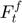
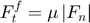
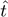
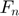

ContactForceT_Slider class
Contents
Description
This is a sub-class of the ContactForceT class for the implementation of the Simple Slider tangent contact force model.
This model assumes that the tangent contact force has only a friction component , provided by a slider.


The friction coefficient  must be provided.
must be provided.
Notation:
: Tangent direction between elements
: Normal contact force vector
References:
classdef ContactForceT_Slider < ContactForceT
Public properties
properties (SetAccess = public, GetAccess = public)
% Contact parameters
fric double = double.empty; % friction coefficient
end
Constructor method
methods
function this = ContactForceT_Slider()
this = this@ContactForceT(ContactForceT.SLIDER);
this = this.setDefaultProps();
end
end
Public methods: implementation of super-class declarations
methods
%------------------------------------------------------------------
function this = setDefaultProps(this)
end
%------------------------------------------------------------------
function this = setCteParams(this,~)
end
%------------------------------------------------------------------
function this = evalForce(this,int)
% Force modulus (friction contribution only)
if (~isempty(int.cforcen))
f = this.fric * norm(int.cforcen.total_force);
else
f = 0;
end
% Total tangential force vector (against deformation and motion)
this.total_force = -f * int.kinemat.dir_t;
end
end
end